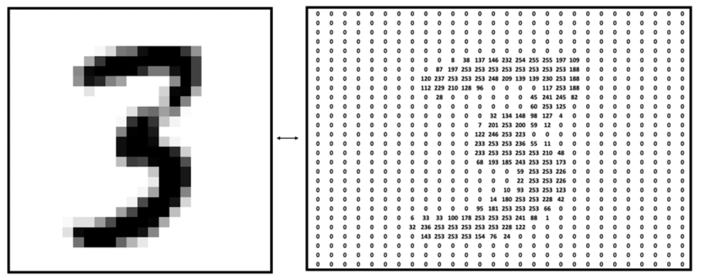

Estimation: MLE, MAP
& Fundamental Limits
How to choose from data — and when no choice can work
Albert No · Yonsei University
Fall 2026
Contents
Why Estimation?
Training is estimation
Where Does the Loss Come From?
A model $q_\theta$ gives every data point a probability; we observe $x_1, \dots, x_n$ (i.i.d.)
Natural rule: pick the $\theta$ under which the data we saw is most probable
$\log$ is increasing; dividing by $n$ and flipping the sign turns max into min
Another justification of the cross-entropy loss: it is maximum likelihood.
A Claim to Prove Today
Cross-entropy loss, in its two standard forms
Claim: minimizing $\mathcal{L}_{\text{CE}}$ is maximum likelihood estimation
Left: generative, score the input. Right: classification, score the label
Two Faces of One Problem
Estimate a label $y$
Given input $x$, guess the class
classification — MLE, MAP, Naive Bayes
Estimate a parameter $\theta$
Given samples $x_1, \dots, x_n$, fit the model
training — MLE, bias–variance
Same recipe for both: maximize a likelihood.
Conditional Expectation
The tower property — today's workhorse
Recall — Conditional pmf
Recall. $\;p_{X|Y}(x|y) = \dfrac{p_{X,Y}(x,y)}{p_Y(y)}$ — a valid pmf in $x$, for each fixed $y$
One running joint table, used all lecture:
| $p_{X,Y}$ | $y = 0$ | $y = 1$ | $p_X$ |
|---|---|---|---|
| $x = 0$ | $1/4$ | $1/4$ | $1/2$ |
| $x = 1$ | $1/2$ | $0$ | $1/2$ |
| $p_Y$ | $3/4$ | $1/4$ | $1$ |
Definition — Conditional Expectation
Definition.
The conditional expectation of $X$ given $Y = y$:
An ordinary expectation — under the conditional distribution
The best guess once $Y$ is known
Worked — Conditional pmfs and Means
Condition the table on each value of $Y$, then average $X$:
- Seeing $Y = 0$: $X$ leans to $1$. Seeing $Y = 1$: $X$ is forced to $0$
- One number per value of $Y$ — compare unconditional $\mathbb{E}[X] = \tfrac12$
Observation changes the best guess — that is estimation
$\mathbb{E}[X \mid Y]$ Is a Random Variable
$g(y) = \mathbb{E}[X \mid Y = y]$: a function of $y$
$\mathbb{E}[X \mid Y] = g(Y)$: random, since $Y$ is random
On the running table, its own distribution:
A random variable — so it has a mean of its own: $\mathbb{E}\big[\mathbb{E}[X \mid Y]\big] = \,?$
Theorem — The Tower Property
Theorem 1 (tower property).
For any random variables $X, Y$ (with $\mathbb{E}|X| \lt \infty$):
Also called the law of iterated expectations
Tower Property — Proof
- LOTUS: $\mathbb{E}[g(Y)] = \sum_y g(y)\, p_Y(y)$
- Marginalizing $y$ recovers $p_X$
Why the Tower Matters Today
- Compute a hard $\mathbb{E}[\cdot]$ by conditioning first
- Inside $\mathbb{E}[\,\cdot \mid Y\,]$: anything depending only on $Y$ is a constant
This one move kills the cross term in the MMSE proof.
The Estimation Problem
Guess $y$ from $X = x$
Setup — Sample and Label
- $X$: a sample (input) — image, height, sentence
- $Y$: the label (output)
- Known: the conditional model $p_{X|Y}(x|y)$
Model known, label hidden
Running Example — Two Nationalities
Example (heights).
Nationality A: heights $\sim \mathcal{N}(170, 10^2)$ · Nationality B: heights $\sim \mathcal{N}(180, 15^2)$
Label $Y = 0$ for A, $Y = 1$ for B; observation $X$ = height
The Two Height Densities
At $x = 176$: both densities positive — which wins?
Two Questions About One Height
We measure a person: $x = 176$ cm. Two different questions:
Likelihood question — MLE
"If this person were from A, how likely is $176$ cm? And if from B?"
compare $f_{X|Y}(176 \mid y)$: which nationality explains the height better
Posterior question — MAP
"Given $176$ cm, how probable is it that this person is from A?"
$p_{Y|X}(A \mid 176)$: among all people $176$ cm tall, the fraction from A
Different questions: (sometimes) different answers — only the posterior counts how common each nationality is.
Maximum Likelihood
Which $y$ makes the data most likely?
Definition — MLE
Definition (maximum likelihood estimator).
Fix the observation $x$; rank the candidates $y$ by likelihood
- Needs only the conditional model $f_{X|Y}$ — no prior on $Y$
- Discrete $X$: replace density $f$ by pmf $p$
MLE on the Heights
Pick $\hat{y} = 0$ (nationality A) iff $f_{X|Y}(x|0) \gt f_{X|Y}(x|1)$:
Two knowns fight: distance to the mean vs. spread
Worked — $x = 176$
B's mean is closer ($4$ vs. $6$ cm) — but A's density is taller
MLE Decision Boundary
Unequal spreads: far tails belong to B — the wide curve wins extremes
Worked — $x = 185$
Past the boundary $\approx 179$: the red curve is on top
What MLE Ignores
- MLE never asks: how common is each nationality?
- $99\%$ from A $\Rightarrow$ even $185$ cm is probably from A
- Base rates need a distribution on $Y$ — a prior
Folding in the prior $p_Y$ gives the next estimator: MAP.
Maximum a Posteriori
Priors change the answer
Definition — MAP
Definition (maximum a posteriori estimator).
Given $X = x$: rank candidates by posterior probability
- Extra requirement: the prior $p_Y(y)$ for all $y$
- Continuous $Y$: replace pmf by density $f_{Y|X}$
From Model to Posterior — Bayes' Rule
We know $p_{X|Y}$, not $p_{Y|X}$ — flip with the conditional pmf:
- Numerator: model $\times$ prior — both known
- Denominator $p_X(x)$: what about it?
$p_X(x)$ Does Not Matter
$p_X(x)$ is constant in $y$ — it cannot change the argmax:
MAP $=$ likelihood $\times$ prior. Uniform prior $\Rightarrow$ MAP $=$ MLE.
Heights with a Prior
Suppose nationality A dominates: $p_Y(0) = \tfrac{9}{10}$, $\;p_Y(1) = \tfrac{1}{10}$
MAP picks $\hat{y} = 0$ iff
Same densities — each side rescaled by its prior
Worked — $x = 176$, with Prior
Same verdict as MLE here — the prior only widened the margin
Worked — $x = 185$: They Disagree
| Estimator | Score for A | Score for B | Verdict |
|---|---|---|---|
| MLE | $0.0130$ | $\mathbf{0.0252}$ | B |
| MAP $\left(\tfrac{9}{10}, \tfrac{1}{10}\right)$ | $\mathbf{0.0117}$ | $0.0025$ | A |
A tall person — but tall people from A still outnumber people from B
Base rates flip a $2{:}1$ likelihood edge
The Prior Moves the Boundary
The central A region widens from about $[145, 179]$ to $[129, 195]$
Theorem — MAP Is Bayes Optimal
Bayes optimal: with the true distribution of $(X, Y)$ known, no rule that sees only $X$ has a smaller expected loss
Theorem 2 (Bayes optimality of MAP).
Among all estimators $\hat{Y}(X)$, the MAP rule minimizes the probability of error:
$0/1$ loss: expected loss $=$ error probability; its minimum is the Bayes error
Proof — Score Any Estimator
Fix any rule $\hat{Y}(\cdot)$; condition on $X$ (tower property, Thm 1):
- Each $x$ contributes its posterior mass at the guessed label
- Contributions are independent across $x$ — optimize pointwise
Proof — Maximize Each Term
- Equality iff $\hat{Y}(x) \in \operatorname*{argmax}_y p_{Y|X}(y|x)$ for every $x$ with $p_X(x) \gt 0$
- That is exactly the MAP rule $\quad\blacksquare$
Implication — Regularization Can Encode a Prior
Estimating a continuous parameter $\theta$: take logs of likelihood $\times$ prior
- Gaussian prior $f_\Theta \propto e^{-\|\theta\|^2 / 2\tau^2}$: adds $-\tfrac{1}{2\tau^2}\|\theta\|^2$
- L2 weight decay $=$ Gaussian-prior MAP, once $\lambda$ and $\tau^2$ are matched
Fano's Inequality
When no estimator can work
The Fundamental-Limit Question
- True label $Y \in \mathcal{Y}$, input $X$ (say, an image)
- Hard classification: $\hat{Y}(X) \in \mathcal{Y}$, a function of $X$
- Error probability: $P_e = \Pr\big( Y \neq \hat{Y}(X) \big)$
MAP is the best rule (Thm 2) — but how good can the best be?
Theorem — Fano's Inequality
Theorem 3 (Fano's inequality).
For any estimator $\hat{Y}(X) \in \mathcal{Y}$ of $Y \in \mathcal{Y}$:
Any estimator — MAP, a neural network, anything computable from $X$
Reading the Bound
- Numerator $H(Y|X) - 1$: leftover label uncertainty, minus one bit
- Denominator $\log |\mathcal{Y}|$: bits to name a label outright
- Depends only on the joint distribution $(X, Y)$ — not the model class
$H(Y|X) \gt 1$ bit $\;\Rightarrow\;$ a hard floor under every estimator's error.
Fano — Proof Overview
Target: $\;H(Y|X) \leq 1 + P_e \log|\mathcal{Y}|$, then rearrange
One quantity, two decompositions — the whole proof
Proof Step 1 — The Error Flag
- Binary, with $p_E(1) = \Pr(Y \neq \hat{Y}(X)) = P_e$
- $E$ is a function of the pair $(Y, \hat{Y})$ — used in Step 2
The quantity to sandwich: $\;H(E, Y \mid \hat{Y})$
Proof Step 2 — First Expansion
Chain rule $H(A, B \mid C) = H(A \mid C) + H(B \mid A, C)$: order $Y$ then $E$, all given $\hat{Y}$:
Given both $Y$ and $\hat{Y}$, the flag $E$ is determined:
Proof Step 3 — DPI Enters
$\hat{Y}$ is a function of $X$, so $I(Y; \hat{Y}) \leq I(Y; X)$ (DPI); subtract both from $H(Y)$:
- Lower bound done: the guess can't know more than the input
- This is where "any estimator" gets baked in
Proof Step 4 — Second Expansion
Same quantity, chain rule in the other order ($E$ first):
Now bound each of the two terms separately
Steps 5 and 6 — one term each
Proof Step 5 — The Flag Term
- A yes/no flag carries at most one bit
- This is the "$-1$" that ends up in Fano's numerator
Proof Step 6 — The Label Term, Split by $E$
Conditional entropy averages over the values of the condition $E$:
- Two scenarios: guessed right, guessed wrong
- Weights: $p_E(0) = 1 - P_e$, $\;p_E(1) = P_e$
Proof Step 7 — Both Scenarios Bounded
Correct ($E = 0$): $Y = \hat{Y}$, which is given — nothing left:
Error ($E = 1$): $Y$ is some label — at worst uniform:
Proof Step 8 — Assemble the Upper Bound
Upper bound done — the sandwich is ready
Proof Step 9 — Close the Sandwich
Solve for $P_e$:
Fano — Proof Summary
The trick: a free error flag ($H(E|Y,\hat{Y}) = 0$), re-chained — cost $1$ bit
Worked — a 1024-Class Problem
$|\mathcal{Y}| = 1024$ classes ($\log 1024 = 10$ bits); knowing $X$ leaves $H(Y|X) = 1.5$ bits:
- Only $1.5$ of $10$ bits left — about $2^{1.5} \approx 3$ plausible labels per input
For this fixed joint distribution of $(X,Y)$, no estimator beats 5% error.
When Fano Says Nothing
- $H(Y|X) \leq 1$ bit $\Rightarrow$ bound $\leq 0$: vacuous
- Binary labels ($\log |\mathcal{Y}| = 1$): this form never bites
- Sharper variants keep the exact $h_2(P_e)$ instead of bounding it by $1$
A lower bound tool — useful when uncertainty is genuinely large
What Fano Buys Us
- Label noise ceiling: mislabeled data inflates $H(Y|X)$ — accuracy caps
- Feature audit: features with small $I(X;Y)$ leave $H(Y|X)$ large — hopeless before training
- Theory workhorse: minimax lower bounds in learning theory start from Fano
MAP is the best rule. Fano says even the best cannot cross this line.
Parameter Estimation
MLE for $\theta$ — and why CE loss is MLE
New Target: a Parameter
- $X_1, \dots, X_n$ i.i.d. from $p_X$, parameterized by $\theta$
- Observed: samples $x_1, \dots, x_n$ — estimate $\theta$
- No distribution assumed on $\theta$ — so MLE, not MAP
Work with the Log-Likelihood
$\log$ is strictly increasing — same argmax, nicer algebra:
- Product of $n$ tiny numbers $\to$ sum of $n$ manageable ones
- Sums differentiate term by term — calculus-ready
Example — Bernoulli MLE
Example (coin with unknown bias).
$X_1, \dots, X_n$ i.i.d. Bernoulli, $\;p_X(1) = p$; parameter $\theta = p$
One formula for both outcomes — the exponent trick
Bernoulli — Log-Likelihood
Only two statistics survive: heads count, tails count
Bernoulli — Set the Derivative to Zero
Cross-multiply and cancel:
Interior solution, valid for $0 < \sum_i x_i < n$; all heads gives $\hat{p} = 1$, all tails $0$
The Obvious Guess Is the MLE
- Empirical mean $\hat{p} = \frac{1}{n} \sum_i x_i$: not just a sensible guess — it is the MLE
- Law of large numbers: $\hat{p} = \bar{X}_n \to p$ in probability
- Hoeffding: $\Pr\big(|\hat{p} - p| \geq \epsilon\big) \leq 2e^{-2n\epsilon^2}$
Counting heads is the maximum-likelihood answer — and concentration certifies it.
Worked — 10 Flips, 7 Heads
MLE: $\hat{p} = 7/10 = 0.7$. Compare likelihoods $L(p) = p^7 (1-p)^3$:
| candidate $p$ | $L(p)$ |
|---|---|
| $0.5$ | $0.00098$ |
| $\mathbf{0.7}$ | $\mathbf{0.00222}$ |
| $0.9$ | $0.00048$ |
The data is $2.3\times$ likelier under $0.7$ than under a fair coin
The Log-Likelihood Curve
Concave in $p$ — the zero-derivative point is the unique max
Example — Gaussian MLE
Example (Gaussian samples).
$X_1, \dots, X_n$ i.i.d. $\mathcal{N}(\mu, \sigma^2)$; parameter $\theta = (\mu, \sigma^2)$
Two unknowns — one derivative each
Gaussian — Solve for $\mu$
- The sample mean again — $\sigma^2$ cancels entirely
- Squared error's minimizer is the average
Gaussian — Solve for $\sigma^2$
Treat $t = \sigma^2$ as the variable:
- At the joint optimum, substitute the fitted $\hat{\mu}$ into the variance solution
- Average squared deviation from the fitted mean
- Biased with $\hat{\mu}$ plugged in: $\mathbb{E}[\widehat{\sigma^2}] = \tfrac{n-1}{n}\sigma^2$
- Substituting $t$ turns a messy derivative into one line
Definition — Empirical Distribution
Definition (empirical distribution).
Samples $x_1, \dots, x_n$ on an alphabet $\mathcal{X}$: the fraction of samples equal to each symbol
A genuine pmf on $\mathcal{X}$: nonnegative, sums to $1$ — built from data alone
Example — Ten Samples, Four Symbols
$\mathcal{X} = \{a, b, c, d\}$, $\;n = 10$ samples:
a b a c a d b a c a
counts $5, 2, 2, 1$ — divide by $n = 10$
$\hat{p}_{10} = (0.5,\, 0.2,\, 0.2,\, 0.1)$: the histogram of the data, normalized to sum to $1$.
Worked — Average Loss, Grouped by Symbol
Same $10$ samples; add up $\log \frac{1}{q(x_i)}$ one symbol at a time:
Average over samples $=$ average over symbols, weighted by $\hat{p}_n$.
The Promised Proof — CE Loss Is MLE
Model $q_\theta$, samples $x_1, \dots, x_n$; divide the log-likelihood by $n$:
- $\hat{p}_n$: empirical distribution — the fraction of samples at each $x$
- Right side: the cross-entropy $H(P, Q)$
CE Loss Is MLE — via KL
Recall. $\;H(P, Q) = H(P) + D(P \,\|\, Q)$
$H(\hat{p}_n)$ is constant in $\theta$ — only the KL term moves
One Identity, Three Names
- Unweighted CE, normalized model: training is maximum likelihood
- Equivalently: a KL projection of data onto the model class
The cross-entropy loss was maximum likelihood all along.
Naive Bayes
A working classifier from counts alone
Classification Needs a Model
Input $X^n = (X_1, \dots, X_n)$: $n$ binary features; label $Y$. To classify:
- Both need the model $p_{X^n|Y}$ — MAP via Bayes' rule, plus the prior $p_Y$
- Recall the heights: we modeled each nationality as a Gaussian — $\mu, \sigma$ per class
Parametric modeling: a whole distribution, described by a few numbers.
Without Structure, the Model Is Huge
- No assumption: one probability per $x^n \in \{0, 1\}^n$
- That is $\sim 2^n$ parameters per class
Nobody has that table — an assumption must cut it down
The Naive Bayes Assumption
Assumption (conditional independence).
Given the label, the features are independent:
Every factor is positive, so the log turns the product into a sum
- $2^n$ parameters $\to$ $n$ parameters per class
- "Naive": over-simplified — yet works reasonably in simple cases
Example — Spam Filter
$X_i = 1$ iff the mail contains dictionary word $i$
$Y = 1$: spam · $Y = 0$: non-spam
Assumption: given spam, word occurrences are independent
Example — MNIST Digits

- Each image: $28 \times 28$ grayscale pixels, intensity $0$–$255$ ($784$ numbers)
- Label $Y \in \{0, 1, \dots, 9\}$: the digit
Example — Binarized $7 \times 7$ MNIST
- Average each $4 \times 4$ block: $28 \times 28 \to 7 \times 7$
- Threshold: $X_i = 1$ if the block is dark, else $0$ ($i = 1, \dots, 49$)
- Naive Bayes: pixels independent given the digit
- Clearly false — strokes are correlated — yet usable
$49$ Bernoulli parameters per digit class, not $2^{49}$
The Naive Bayes Classifier
The MLE label, under the factorized model:
Spam filter: each $p_{X_i|Y}(\cdot|y)$ is Bernoulli with parameter $p_{i|y}$
Still missing: where do the $p_{i|y}$ come from?
Fit the Parameters — by Counting
Training set $\{(\mathbf{x}^{(1)}, y^{(1)}), \dots, (\mathbf{x}^{(N)}, y^{(N)})\}$; Bernoulli MLE per parameter:
"Among spam mails, what fraction contains word $i$?"
Just the Bernoulli MLE $\hat{p} = \frac{\#\text{heads}}{\#\text{flips}}$: flips $=$ class-$y$ mails, heads $=$ those with word $i$.
Fit the Prior Too
$Y$ itself is Bernoulli — one more count gives the MAP ingredient:
- The fraction of spam in the training set
- Everything MAP needs is now estimated from data
MAP with the Fitted Model
$\hat{y}_{\text{MAP}} = \operatorname*{argmax}_y p_{Y|X^n}(y|x^n)$, where Bayes' rule gives
Every factor: a count from the training set
Worked — a 10-Mail Training Set
$N = 10$: $4$ spam, $6$ non-spam $\Rightarrow$ $p_Y(1) = 2/5$
| word | in spam (of 4) | in non-spam (of 6) | $p_{i|1}$ | $p_{i|0}$ |
|---|---|---|---|---|
| free | $3$ | $1$ | $3/4$ | $1/6$ |
| meeting | $1$ | $4$ | $1/4$ | $2/3$ |
Six counts — the whole classifier
Worked — Classify a New Mail
New mail: contains "free", no "meeting" — $x = (1, 0)$:
The Zero-Count Failure
Add the word "winner": in $2$ of $4$ spam, $0$ of $6$ non-spam
- One unseen combination vetoes the entire class
- Rare words guarantee this happens in practice
Laplace Smoothing
Start every count from $1$ instead of $0$:
- Pretend one extra mail with the word, one without
- Estimates pulled slightly toward $\tfrac12$; zeros impossible
Worked — Smoothing the Table
| word | MLE $p_{i|0}$ | smoothed $p_{i|0}$ |
|---|---|---|
| free ($1$ of $6$) | $1/6 \approx 0.17$ | $2/8 = 0.25$ |
| meeting ($4$ of $6$) | $2/3 \approx 0.67$ | $5/8 \approx 0.63$ |
| winner ($0$ of $6$) | $0$ — veto | $1/8 = 0.125$ |
The veto becomes a strong-but-finite vote — evidence can now outweigh it
Naive Bayes — What to Take Away
- Whole pipeline $=$ today's theory: MLE fits, MAP classifies
- Cost: linear in $n$ — counts, no gradient descent
- Wrong-but-useful model: independence is false, predictions still land
Smoothing quietly biased the estimate to cut variance — next, that trade made precise.
Bias–Variance
Two ways an estimator can be wrong
An Estimator Is a Random Variable
Sample $X_1, \dots, X_n$; estimator of a real parameter $\theta \in \Omega \subset \mathbb{R}$:
- Random inputs $\Rightarrow$ random output — $\hat{\theta}_n$ has a distribution
- That distribution depends on the true $\theta$: $\;\hat{\theta}_n \equiv \hat{\theta}(X_1, \dots, X_n; \theta)$
New dataset, new estimate — quality must be judged on average
Definition — Bias
Definition (bias).
Unbiased: $\mathbb{E}[\hat{\theta}_n] = \theta$ for all possible $\theta$
Systematic error — where the estimates center, vs. the truth
Definition — Variance of an Estimator
Definition (variance).
- Scatter around its own center — not around $\theta$
- The ordinary variance — of a new random variable
Definition — Mean Squared Error
Judge by the squared-error ($L_2$) loss $(\hat{\theta}_n - \theta)^2$; its risk:
- Distance to the truth — bias and scatter both hurt
- How exactly? The next theorem answers
Technique Review — Add and Subtract
To relate "distance to truth" and "distance to own center": insert the center
- The completing-the-square move: insert a helpful zero
- Hope: the cross term dies — it will
Theorem — Bias–Variance Decomposition
Theorem 4 (bias–variance decomposition).
- Exact identity — no inequality, no assumption beyond finite variance
- Unbiased estimator: MSE $=$ variance
Proof — Insert the Center, Expand
Write $m = \mathbb{E}[\hat{\theta}_n]$; add and subtract it, square out:
Last term: constant — the expectation does nothing to it
Proof — The Cross Term Dies
$(m - \theta)$ is a constant — pull it out of the expectation:
Deviations from your own mean average to zero — by definition of $m$
The Dartboard Picture
Truth $=$ bullseye · each dart $=$ the estimate from one dataset
Example — the Sample Mean
i.i.d. sample, mean $\mu$, variance $\sigma^2 \lt \infty$; estimator $\hat{X} = \tfrac{1}{n}\sum_i X_i$:
- The same $\sigma^2/n$ behind Chebyshev and the law of large numbers
- MSE $\to 0$: the sample mean is consistent
Worked — Can Bias Ever Help?
Coin bias $p$, $n = 10$ flips, $S = \sum_i X_i$. Two estimators:
Worked — the Numbers
| true $p$ | MSE of $\hat{p}$ (unbiased) | MSE of $\tilde{p}$ (smoothed) | winner |
|---|---|---|---|
| $0.5$ | $0.0250$ | $\mathbf{0.0174}$ | biased $\tilde{p}$ |
| $0.9$ | $\mathbf{0.0090}$ | $0.0107$ | unbiased $\hat{p}$ |
Near $\tfrac12$: the bias is tiny, the variance cut is large
Bias$^2$ + Var: only the sum matters
MSE Across All True $p$
Implication — the Regularization Trade
- Weight decay, Laplace smoothing: accept bias, cut variance
- The overfitting U-curve — same trade, model-class axis
- Unbiasedness is not sacred; MSE is the score
Next: with squared error as the score, which estimator of a random quantity is optimal?
MMSE Estimation
The conditional mean wins
Setup — Denoising
Both random; joint distribution known. Score by mean squared error:
The minimizer is the Bayes-optimal estimator for squared error — as MAP is for $0/1$ error (Thm 2)
Theorem — MMSE $=$ Conditional Mean
Theorem 5 (MMSE estimator).
Among all functions $\hat{X}(Y)$, the mean squared error is minimized by
The conditional expectation returns as the answer — not just a tool
MMSE — Proof Overview
Same skeleton as Theorem 4 — insert the natural center, kill the cross term:
This time the center is random — that's why the tower is needed
Proof Step 1 — Insert and Expand
Three terms — the middle one must die
Proof Step 2 — Tower on the Cross Term
Tower first (Thm 1); given $Y$, both $\mathbb{E}[X|Y]$ and $\hat{X}(Y)$ are constants:
Any $h(Y)$ slides out of the inner expectation
Proof Step 3 — the Inner Factor Is Zero
The residual $X - \mathbb{E}[X|Y]$ has conditional mean zero — by construction
Proof Step 4 — Read Off the Minimizer
MMSE — Proof Summary
- The trick: add-and-subtract, twice today — Thm 4, and here
- Weight carrier: tower property — the cross term's inner mean is $0$
Worked — the Table, One Last Time
Estimate $X$ from $Y$ on the running table: $\hat{X}(0) = \tfrac23$, $\hat{X}(1) = 0$
Best constant guess $\mathbb{E}[X] = \tfrac12$: MSE $= \text{Var}(X) = \tfrac14 \gt \tfrac16$
Watching $Y$ buys a third of the error
Implication — Denoisers Learn $\mathbb{E}[X|Y]$
- Regression with MSE loss: the ideal predictor is $\mathbb{E}[Y_{\text{label}} \mid \text{input}]$
- Diffusion models: the ideal denoiser outputs the clean data's conditional mean
- Estimation theory names the target; training approximates it
The loss picks the estimator: $0/1$ $\to$ MAP (Thm 2); squared $\to$ $\mathbb{E}[X|Y]$ (Thm 5).
Next — the Distribution That Kept Showing Up
- Heights model, MLE example, weight-decay prior: all Gaussian
- Max entropy under a variance budget — Gaussian
- Central limit theorem — sums become Gaussian
Next lecture: the multivariate Gaussian — its three definitions, and why $\mathbb{E}[X|Y]$ becomes linear.
Questions?